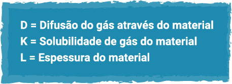

Óptica
Cálculos voltados à contatologia, parâmetros técnicos para lentes de contato e características de adaptação e efeitos corretivos nos diferentes materiais e desenhos das lentes de contato e auxílios ópticos
Cálculos voltados à contatologia
Para a realização de um laudo ou parecer técnico em casos de não adaptação ao uso de lentes de contato corretivas, é preciso ter total certeza de que o problema não está ligado aos parâmetros técnicos dessas lentes, então será necessário calcular os valores dióptricos delas, que foram confeccionadas para o usuário. Para isso, é preciso verificar o cálculo de distância ao vértice e o cálculo de raio de curvatura.
Cálculo de distância ao vértice
O cálculo de distância ao vértice consiste em transformar a dioptria da receita de óculos para lentes de contato, considerando a distância de 12 mm entre o centro da lente dos óculos até o vértice da córnea, pois essa distância não está presente no momento em que as lentes de contato estão em aderência aos olhos do usuário. É aplicado na adaptação de lentes de contato hidrofílicas (gelatinosas) e rígidas gás permeáveis (RGP), somente em dioptrias esféricas, a partir do grau + ou - 5,00 dioptrias, para a maioria dos fabricantes, e grau + ou - 4,00 dioptrias para outros fabricantes.
A fórmula para determinar essa convergência é a seguinte:

D maiúsculo um, dividido por um, mais ou menos D maiúsculo um, vezes d minúsculo.
Sendo:
D1 = Refração esférica da receita
D2 = Valor do grau da lente de contato
1 = Constante da equação
d = Distância da lente convertida em metros (12 mm), que resulta em 0,012 m
Quando a dioptria for negativa, no denominador usa-se o sinal da fórmula + (positivo); e quando positiva, usa-se o sinal - (negativo).
Exemplo 1
Receita de esférico -6,00.
Deseja-se converter esse grau para lente de contato:
D maiúsculo dois, igual a menos seis, dividido por um mais abre parênteses, menos seis fecha parênteses, vezes zero vírgula zero doze, igual menos seis dividido por um, mais zero vírgula zero setenta e dois, igual a menos seis, dividido por um vírgula zero setenta e dois, igual a menos cinco vírgula sessenta.
Então, a lente de contato terá -5,60 de dioptria, que sempre se arredonda em passos de 0,25, como habitualmente já é feito universalmente em óptica.
Em miopia, sempre para baixo, então, no caso, resulta em -5,50 esf.
Exemplo 2
Receita de esférico +5,00.
Deseja-se converter esse grau para lente de contato:
D maiúsculo dois, igual mais cinco, dividido por um menos abre parênteses mais cinco, fecha parênteses, vezes zero vírgula zero doze, igual a mais cinco, dividido por um, mais zero vírgula zero seis, igual a mais cinco, dividido por zero vírgula noventa e quatro, igual a mais cinco vírgula trinta e dois.
Então, a lente de contato terá +5,32 de dioptria, que se arredonda em passos de 0,25, como habitualmente já é feito universalmente em óptica.
Em hipermetropia, sempre para cima, o resultado será de +5,50 esf.
Cálculo de conversão referente às curvaturas das lentes de contato
Realizam-se esses cálculos para definir a curva base da lente de contato a ser adaptada na córnea do usuário, baseando-nos nas medidas encontradas por meio do ceratômetro, equipamento que informa as medidas vertical e horizontal da córnea.
Figura 1 – Ceratômetro
Fonte: CotaNet (c2018)
Equipamento analógico com orifício para consulta ocular e, de outro lado, apoio para rosto, suspenso em mesa de apoio.
A medida menor (mais plana) da córnea é chamada de curva K. Por meio dela, iniciam-se os cálculos para a conversão do resultado apresentado em dioptria para milímetros (raio), utilizados na adaptação de lentes gelatinosas. Quando houver referência de milímetros e você precisar dos parâmetros em dioptria, utilizados na adaptação de lentes de contato RGP, também poderá realizar a fórmula.
O raio de curvatura e as dioptrias são usados considerando o índice de refração da córnea (n = 1,3375).
Para que se faça a conversão de raio de curvatura para dioptria e de dioptria para raio, utilizam-se as seguintes fórmulas:

Raio igual a n minúsculo menos um, dividido pela dioptria.
ou
Descrição da fórmula: Dioptria igual a n minúsculo menos um, dividido pelo raio.
Sendo:
n = Índice de refração da córnea= (1,337)
1 = Constante da equação
Exemplo 1
Ao ser realizada a medição da curvatura de córnea do usuário, verifica-se que a medida da curva K (meridiano mais plano da córnea) é 44,00 d e é preciso selecionar a curva base em milímetros (raio):
Raio curva base em milímetros igual a um vírgula trezentos e trinta e sete, menos um, dividido por quarenta e quatro, igual a zero vírgula trezentos e trinta e sete dividido por quarenta e quatro, igual a trezentos e trinta e sete dividido por quarenta e quatro, igual a sete vírgula sessenta e seis.
Onde 7,66 será a curva base (CB) da lente de contato que será adaptada, a qual sempre será arredondada pela disponibilidade do fabricante.
Exemplo 2
Deseja-se adaptar lentes RGP no usuário de lentes de contato e sabe-se que ele utiliza lentes com raio 8,50. Basta, então, realizar o cálculo para descobrir a dioptria da lente rígida:
Dioptria igual a um vírgula trezentos e trinta e sete, menos um, dividido por sete vírgula noventa, igual a zero vírgula trezentos e trinta e sete dividido por sete vírgula noventa, igual a trezentos e trinta e sete dividido por sete vírgula noventa, igual a quarenta e dois vírgula sessenta e cinco.
Onde 42,65 d será a curvatura da lente de contato RGP que será adaptada, também arredondada pela disponibilidade do fabricante.
A importância da compreensão dos cálculos em contatologia para a elaboração de laudos técnicos pelo perito está totalmente voltada aos problemas de adaptação com o grau de refração prescrito pelo especialista e a curvatura designada pelo técnico contatólogo.
Como você viu durante os estudos, o grau para óculos nem sempre é o mesmo para lentes de contato, e as curvaturas são específicas para cada modelo, então cabe ao técnico ter conhecimento de todos os possíveis cálculos para poder descartar ou resolver discordâncias no valor dióptrico do paciente usuário de lentes de contato.
Parâmetros técnicos para lentes de contato
Para a elaboração de laudo técnico de lentes de contato, é preciso ter conhecimento de seus principais parâmetros técnicos, como curvatura, diâmetro e dioptria.
Neste material, serão abordados esses itens que serão avaliados pelo perito especializado na elaboração de um laudo com as informações técnicas corretas.
Distância ao vértice (DV)
É a distância existente de 12 mm entre o centro da lente dos óculos até o vértice da córnea.
Para facilitar o trabalho dos contatólogos, os fabricantes dispõem de tabelas para consultar o grau convertido.
Figura 2 – Tabela de conversão de distância ao vértice
Fonte: adaptado de Lentes Mais Finas (2022)
Tabela de consulta dos graus convertidos para lentes de contato partindo de 4,00 até 22,50.
Ceratometria
A curvatura da lente deve seguir tão precisamente quanto possível o tamanho da curvatura da córnea, que foi medida pelo profissional que adaptou as lentes de contato, denominada medida de ceratometria. Quando as medidas não são seguidas corretamente, haverá sérios problemas, como flutuação da lente no olho, quando ela se encontrar frouxa, ou um possível edema corneano, quando a lente se encontrar apertada.
Com o intuito de facilitar as adaptações, os fabricantes desenvolveram tabelas para auxiliar ópticos contatólogos, tornando o trabalho mais ágil para os profissionais.
Figura 3 – Tabela de curvaturas Solótica
Fonte: Senac EAD (2023)
Tabela disponível pelo fabricante Solótica que lista curvaturas em dioptria de 30,00 d a 66,00 d, com o raio correspondente na coluna lateral.
Figura 4 – Tabela de curvaturas Optolentes
Fonte: Senac EAD (2023)
Tabela desenvolvida pelo fabricante Optolentes, na qual estão relacionadas as curvaturas em dioptria de um perímetro, resultando em valores em raios (milímetros), indicados para cada modelo de suas lentes gelatinosas disponíveis.
Diâmetro horizontal visível de íris (DHVI)
O tamanho do diâmetro de uma íris é normalmente entre 11 mm e 12 mm. Essa medida é necessária na adaptação de lentes de contato para certificar-se de que a íris está dentro da normalidade de diâmetro da lente a ser adaptada. Caso contrário, será necessário optar por fabricantes que disponham de lentes de contato com medidas especiais.
Diâmetro de pupila
A pupila normalmente mede 4 mm em uma iluminação normal, variando conforme a luminosidade e os demais efeitos do organismo.
Essa medida é importante na adaptação de lentes específicas, como as cosméticas e estéticas, por exemplo.
Figura 5 – Régua consultora para diâmetro de íris e pupila
Fonte: Senac EAD (2023)
Tabela com régua consultora que dispõe, acima, os tamanhos de pupila, variando de 3 a 8 milímetros de diâmetro e, abaixo, os tamanhos de íris, variando entre 10 e 13 milímetros de diâmetro.
Ao elaborar o laudo, o perito deverá ter o conhecimento dessas medidas, dispor dos materiais para comparação com os parâmetros da lente a ser avaliada e conferir se a adaptação seguiu os padrões corretos.
Características de adaptação e efeitos corretivos nos diferentes materiais e desenho das lentes de contato e auxílios ópticos
As lentes de contato têm seus determinados materiais e desenhos que resultam em seus efeitos corretivos, variando conforme fabricantes para a finalidade das dioptrias existentes.
Neste material, acompanhe as principais características de adaptação consideráveis para o uso saudável em relação à lente/córnea, os desenhos e materiais de lentes de contato que o perito precisará conhecer na confecção de um laudo técnico, assim como seus auxílios ópticos.
Característica da adaptação
Um dos maiores desafios de adaptadores de lentes de contato, sem dúvidas, é acertar a melhor curvatura para a córnea do usuário, de modo que a lente se encontre confortável e com boa visibilidade no teste de contraste, no caso das lentes RGP.

Figura 6 – Lente de contato apertada na córnea
Fonte: Dias (2017)
Lente de contato RGP adaptada na córnea com aplicação de colírio de contraste, que auxilia a visibilidade do filme lacrimal acumulado no centro, atestando que a lente está demasiadamente justa na córnea.
Figura 7 – Lente de contato frouxa na córnea
Fonte: Dias (2017)
Lente de contato RGP adaptada na córnea com aplicação de colírio de contraste, que auxilia a visibilidade do filme lacrimal acumulado na periferia, atestando que a lente está demasiadamente frouxa na córnea.
Figura 8 – Lente de contato ideal na córnea
Fonte: Optic ([s.d.])
Lente de contato RGP adaptada na córnea com aplicação de colírio de contraste, que auxilia a visibilidade do filme lacrimal bem distribuído na superfície corneana, atestando que a lente está perfeitamente adaptada.
Em lentes hidrofílicas (gelatinosas), não se utiliza o método de contraste. A verificação torna-se mais simples, apenas avaliando o movimento da lente, se está dentro do padrão esperado (sendo suave e apresentando conforto ao usuário) e se o diâmetro atendeu à medida de íris, com aproximadamente 2 mm da borda da lente após o limbo (limite entre a córnea e a esclera), apoiando-se na esclera (branco dos olhos).
Figura 9 – Lente de contato gelatinosa no olho
Fonte: Central Oftálmica (2021)
Lente de contato hidrofílica (gelatinosa) bem adaptada na córnea com 2 milímetros ultrapassando o limbo, apoiando-se na esclera.
Materiais em lentes de contato
Os materiais empregados para a fabricação de lentes de contato são os polímeros, que são macromoléculas constituídas por unidades menores, os monômeros. Os monômeros ligam-se entre si por meio de ligações covalentes.
O termo “polímero” deriva do grego, poli (“muitas”) e meros (“partes”). Os meros são as unidades que se repetem em um polímero. O monômero é a molécula constituída por um único mero e o polímero é constituído por vários meros.
Material hidrofílico
Utilizado em lentes gelatinosas. Sua estrutura permite que elas sejam flexíveis (moles), corrigindo perfeitamente dioptrias esféricas com conforto físico mediato.
Material rígido gás permeável
O material RGP (rígido gás permeável) tem a estrutura mais dura, permitindo uma melhor correção de dioptrias cilíndricas com ótimo conforto visual, porém fisicamente necessita de um período de adaptação do usuário até alcançar conforto no uso.
Os dois tipos de materiais contêm capacidade dimensional, que é a capacidade de manter constantes seus parâmetros em condições de uso, porém uma manipulação incorreta pode provocar flexão, distorção e modificação de parâmetros originais de fábrica.
Outro fator importante é a transmissibilidade aos gases em lentes de contato, em que a propriedade do material possibilita transmitir oxigênio relacionado a sua espessura, dependendo da sua permeabilidade, que é expressa por meio de valor DK/L, onde:

D = Difusão do gás através do material
K = Solubilidade de gás do material
L = Espessura do material
A maioria dos laboratórios leva em consideração a espessura de 3,00 dioptrias para as informações referentes ao parâmetro DK/L.
Esse fator não está ao alcance do técnico perito em desenvolver análise, pois é de um trato mais científico realizado na indústria de matéria-prima. Nesse caso, as informações encontram-se disponíveis nas bulas dos materiais de lentes de contato.
Desenhos de lentes de contato
As lentes de contato hidrofílicas (LCHs) podem ser de fabricação torneada ou moldada.
LCHs torneadas
Têm ambas as faces, anterior e posterior, esféricas ou asféricas. É o processo de fabricação das lentes de troca anual. São mais ajustáveis à córnea, possibilitando uma maior abrangência de curvaturas, dioptrias e apresentam melhor perfil de bordas.
LCHs moldadas
Consistem no sistema de moldagem dos polímeros em forma aquosa. São mais limitadas em parâmetros, nos quais se enquadram as lentes descartáveis.
As lentes de contato RGP são fabricadas por meio de botões (pequenos pedaços de material em formato cilíndrico que podem medir entre 12 mm e 15 mm de diâmetro). O botão é torneado em um processo semelhante ao de lentes oftálmicas, que dá origem à curvatura da lente e acabamento da sua borda e diâmetro.
Grande parte dos usuários de lentes de contato adquire lentes em mais de um estabelecimento e não se desfaz das lentes antigas. Isso pode gerar enganos durante o uso com queixas de uma lente de contato que não foi adquirida naquele estabelecimento. É nesse momento que o perito vai exercer sua capacidade de conhecimento de desenhos para analisar se a lente é a mesma de origem ou de outra fabricação desconhecida.
Análise da identificação de material e desenho da lente de contato
Existem três passos que correspondem a essa análise:

Passo 1
Inicialmente, observa-se o corpo físico da lente, analisando sua espessura, se está de acordo com a medida ideal orientada pelo fabricante.
Passo 2
Confere-se a marcação do fabricante no corpo da lente, que fica posicionada sempre na borda.
Passo 3
Observa-se a coloração do material, pois cada fabricante apresenta um residual de cores em seus materiais. Esse residual também permite ao usuário localizar mais facilmente a lente de contato, além de distinguir um fabricante dos outros.
Auxílios ópticos para análise das lentes de contato
Existem instrumentos direcionados para controle de qualidade de lentes de contato, que são utilizados pelo perito na verificação de parâmetros das lentes na elaboração do laudo técnico.
A seguir, veja as principais funções de cada instrumento.
Lensômetro
Este aparelho é utilizado para identificar a dioptria das lentes, tanto esféricas quanto cilíndricas.
É usado pelo perito na conferência dos graus das lentes de contato quando a queixa do usuário for dioptria. Pode ser utilizado o mesmo lensômetro das lentes oftálmicas, porém a lente terá de ser segurada pelos dedos ou por uma pinça específica.
Figura 10 – Maneira correta de segurar a lente para consulta em lensômetro
Fonte: Lenscope (2020)
Lente RGP segurada pelas bordas com os dedos indicador e polegar.
Radioscópio
Este aparelho é usado para detectar a curvatura das lentes de contato. É utilizado pelo perito para conferir a curva da lente quando a queixa do usuário for referente à curvatura.
Figura 11 – Radioscópio
Fonte: Senac EAD (2023)
Aparelho analógico na cor cinza, semelhante a um microscópio, com base para encaixe da lente de contato.
Especímetro
É utilizado para verificar a espessura da lente, tanto central quanto de bordas. É usado pelo perito para conferir a espessura das lentes quando, por exemplo, o usuário sente a lente mais espessa do que o normal ou, do contrário, quando ela se parte facilmente.
Régua milimétrica com canaleta em V
É utilizada para identificar o diâmetro da lente de contato. É usada pelo perito na confirmação do diâmetro da lente, quando houver dúvidas ou queixas referente ao diâmetro.
Figura 12 – Lente RGP sendo medida em régua para verificação de diâmetro
Fonte: Senac EAD (2023)
Lente de contato com coloração residual em lilás, posicionada na caneleta em formato “v” da régua milimétrica branca, medindo diâmetro 9,6 milímetros.
Lupa milimétrica
Inspeciona a superfície total da lente, além de ser possível também identificar seu diâmetro. É usada pelo perito para analisar a superfície da lente na procura de algum dano ou até mesmo sua marcação de fábrica.
Agora você compreende a importância de o perito obter informações sobre as características de adaptação, os materiais existentes de lentes de contato, as formas de fabricação e os desenhos disponíveis, além de saber analisar devidamente cada situação de queixa do usuário referente a esses fatores.
Você também entendeu que é indispensável o auxílio dos instrumentos corretos para o perito desenvolver o laudo, pois, com base em todas as conferências, serão identificados os possíveis problemas das lentes a serem analisadas na elaboração.